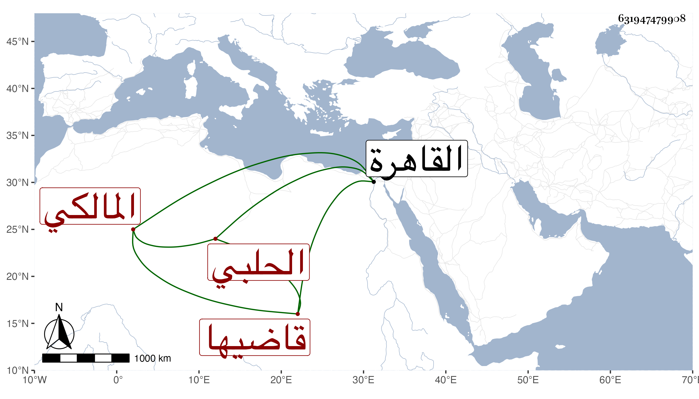

0902Sakhawi.DawLamic.ITO20230111-ara1.EIS1600.631947479908
Biography ID: 631947479908
1286
يوسف الجمال بن النحريري الحلبي قاضيها المالكي . ممن كان يتناوب في السعي فيه هو وابن جنغل الماضي إلى أن وافقه ذاك على تقرير قدر يومي في بدفعه له بشرط إعراضه عن السعي وترك المنصب له . واستمر حتى مات مقلا في أواخر سنة ست وتسعين مصروفا ، وكان يكثر القدوم إلى القاهرة وربما يتردد إلي وكان مزري الهيئة مشاركا من بيت .
